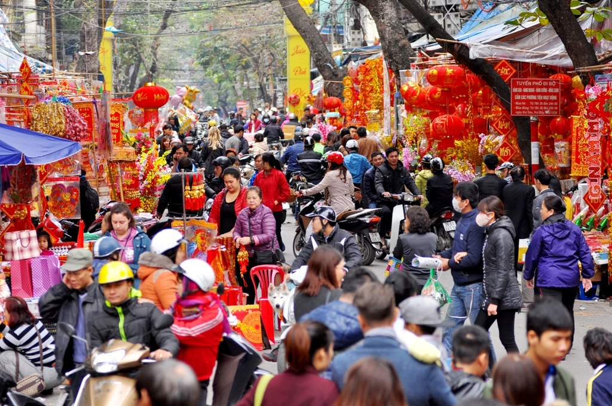
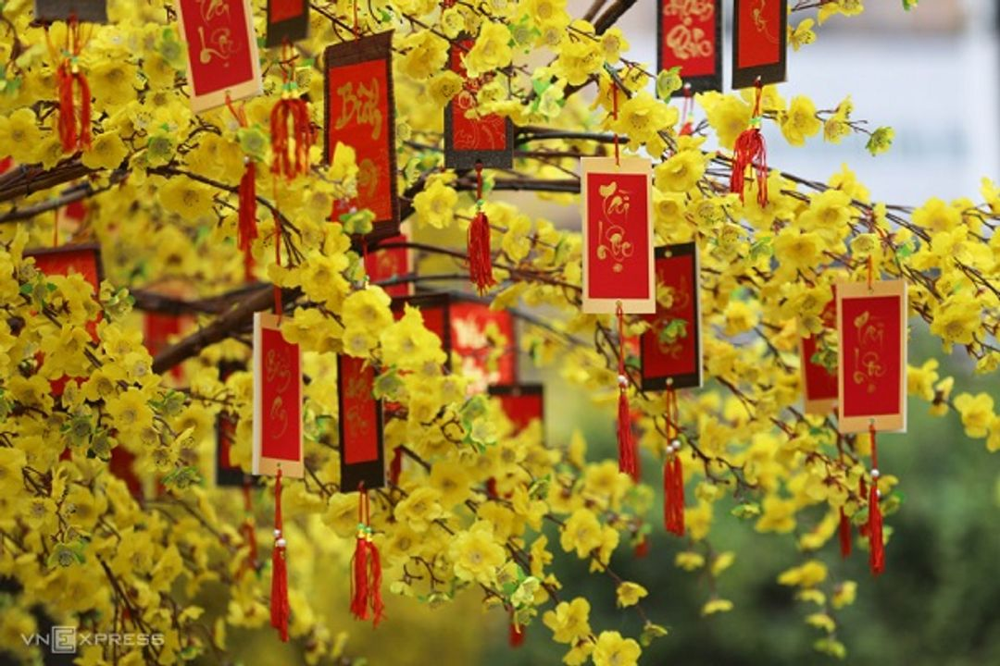
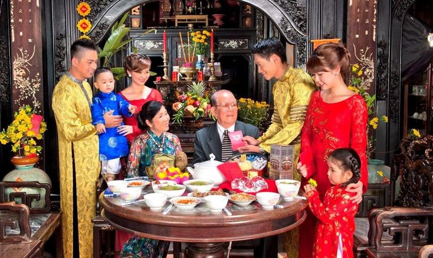

Khám phá những phong tục truyền thống đậm đà bản sắc dân tộc trong ngày Tết cổ truyền của người Việt
Tết Nguyên Đán (hay còn gọi là Tết Cả, Tết Ta, Tết Âm lịch) là dịp lễ quan trọng nhất trong năm của người Việt Nam. Tết không chỉ là thời điểm chuyển giao giữa năm cũ và năm mới mà còn là dịp để mọi người sum họp gia đình, tưởng nhớ tổ tiên và cầu mong một năm mới an lành, thịnh vượng.
Tết Nguyên Đán diễn ra vào ngày đầu tiên của năm âm lịch, thường rơi vào khoảng cuối tháng 1 hoặc đầu tháng 2 dương lịch. Đây là thời điểm thiêng liêng, đánh dấu sự khởi đầu mới với nhiều hy vọng và ước mơ.
Văn hóa Tết Việt Nam mang đậm nét truyền thống, thể hiện qua các phong tục tập quán được lưu truyền qua nhiều thế hệ. Mỗi phong tục đều có ý nghĩa sâu sắc, gắn liền với đời sống tâm linh và văn hóa của người Việt.
Không khí Tết bắt đầu từ những ngày cuối năm, khi mọi người tất bật chuẩn bị. Đường phố rực rỡ sắc đỏ và vàng của hoa mai, hoa đào, câu đối, bánh kẹo. Nhà nhà dọn dẹp, trang trí để đón năm mới. Không gian tràn ngập niềm vui, tiếng cười và những lời chúc tốt đẹp.



Video giới thiệu về Tết Nguyên Đán Việt Nam
Nếu video không hiển thị, xem trực tiếp trên YouTube tại đây.
Khám phá những phong tục đặc trưng của Tết Việt Nam qua các trang sau:
Phong tục tiễn Ông Táo về trời vào ngày 23 tháng Chạp, một trong những nghi lễ quan trọng đầu tiên của Tết.
Tìm hiểu về món ăn truyền thống không thể thiếu trong ngày Tết, biểu tượng của sự sum họp và may mắn.
Lau dọn cuối năm và trang trí nhà cửa với hoa mai, hoa đào, câu đối đỏ để đón Tết.
Ý nghĩa của việc thờ cúng tổ tiên và mâm cỗ ngày Tết, thể hiện lòng hiếu thảo và biết ơn.
Phong tục xông đất - người đầu tiên bước vào nhà trong năm mới mang lại may mắn cho cả gia đình.
Ý nghĩa của phong tục lì xì và những lời chúc Tết truyền thống dành cho trẻ em và người lớn tuổi.
Thứ tự chúc Tết và cách ứng xử trong ngày Tết, thể hiện tình cảm gia đình và sự kính trọng.
Những món ăn đặc trưng ngày Tết: thịt kho tàu, dưa hành, canh măng, giò chả và ý nghĩa của chúng.
Các trò chơi truyền thống ngày Tết: bầu cua, đánh bài chòi, kéo co, ô ăn quan tạo không khí vui tươi.
Các điều kiêng kỵ trong ngày Tết để tránh xui xẻo và đảm bảo một năm mới suôn sẻ, may mắn.